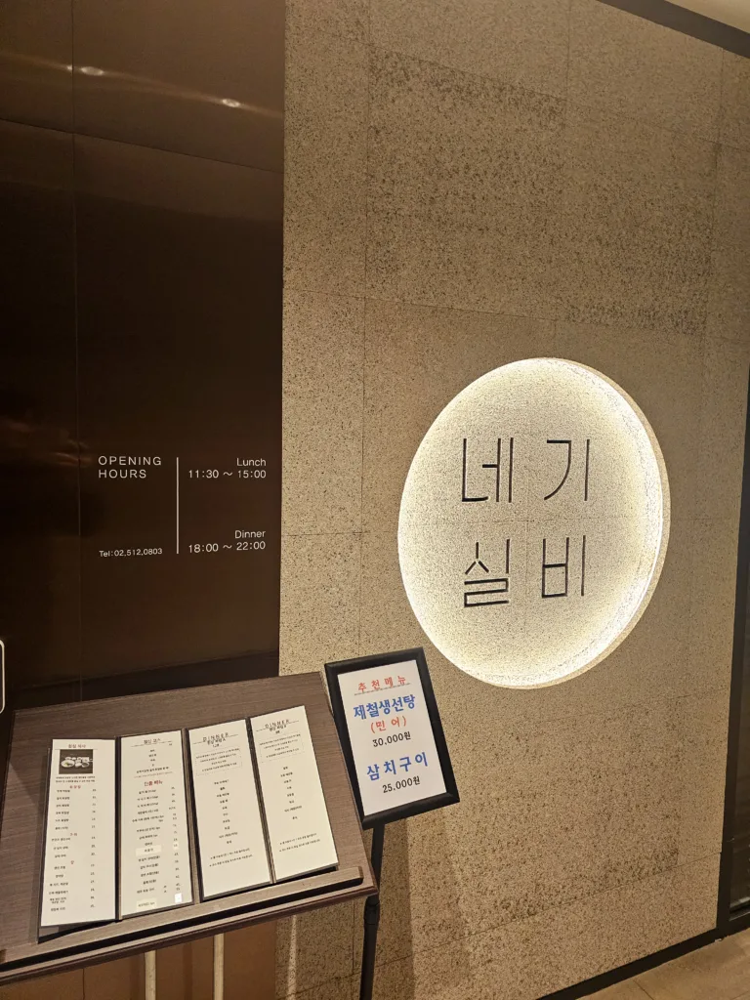
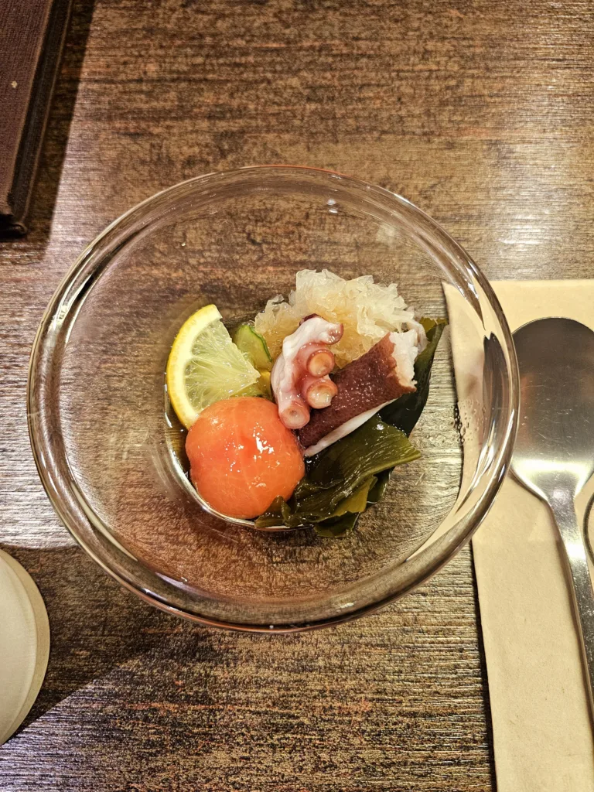
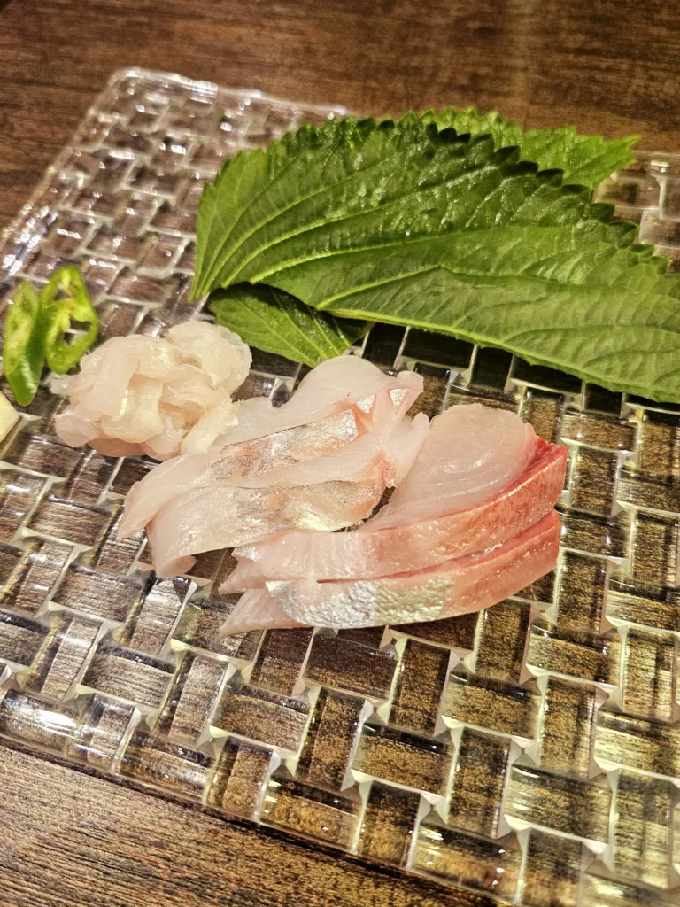
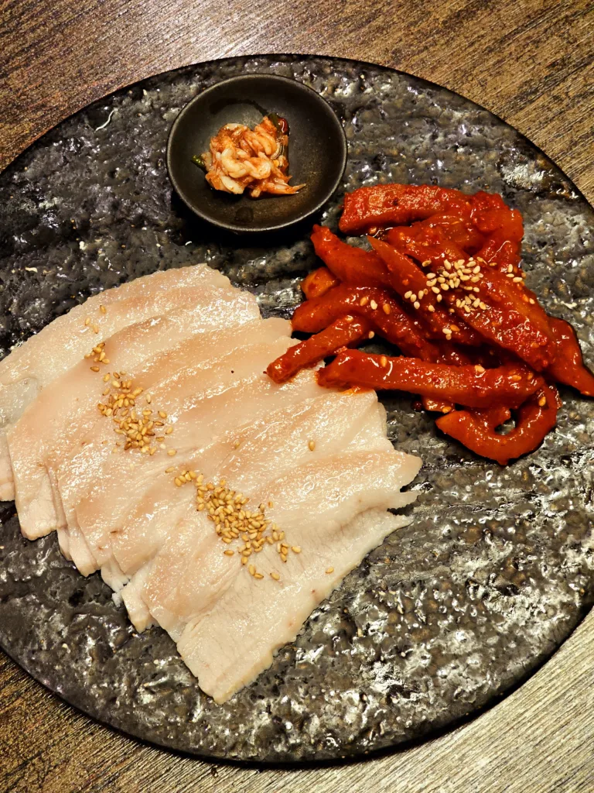
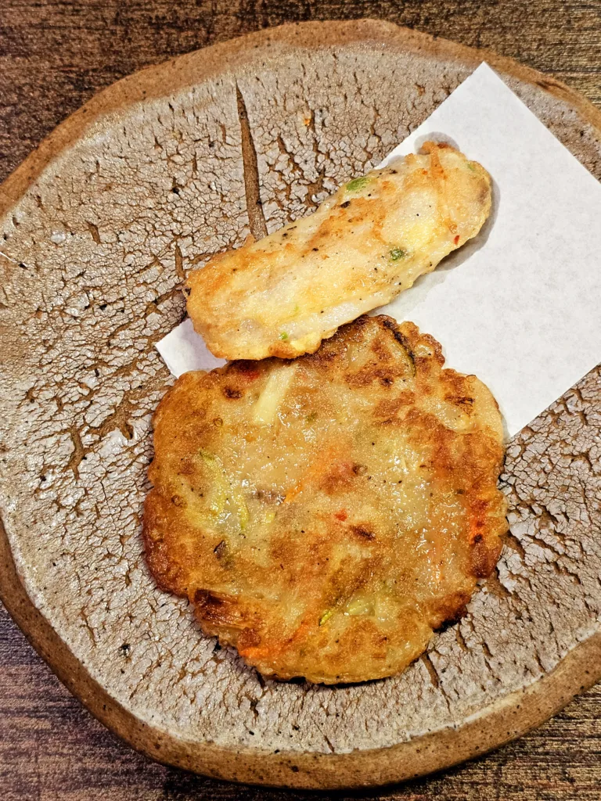
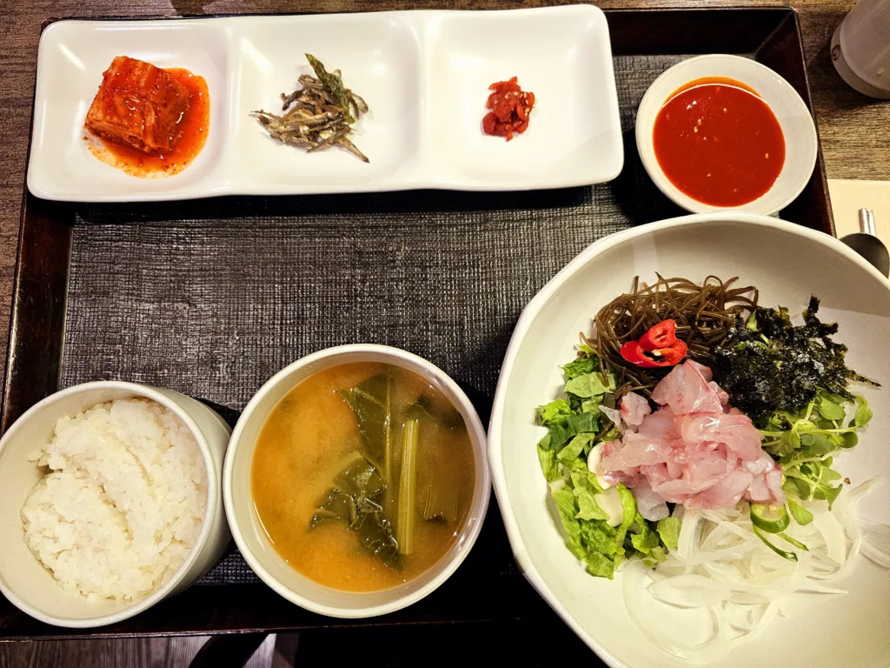
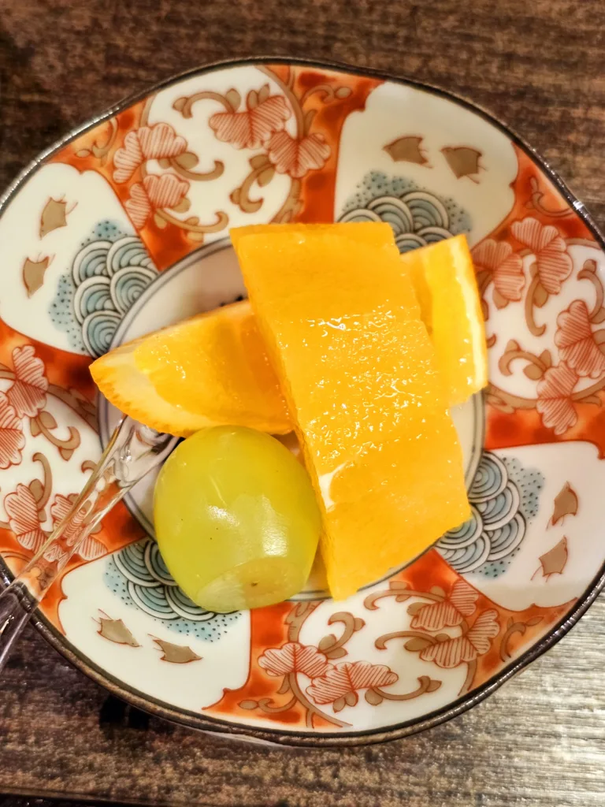

개요
광화문에서 조용하고 품격 있는 점심 코스 요리를 즐기고 싶다면, 네기실비를 추천해요. 흑백요리사로 잘 알려진 장호준 셰프가 운영하는 이곳은, 한식보다는 모던하고 창의적인 고급 요리 코스를 제공하는 곳이에요. 직접 방문해 본 점심 코스 후기, 분위기, 구성 등을 상세히 알려드릴게요.

1) 네기실비
위치: 서울 종로구 새문안로2길 10 디팰리스 B1
운영 시간: 점심 11:30 ~ 15:00 / 저녁 17:30 ~ 21:30
분위기: 모던하면서도 고급스러운 인테리어

2) 주문 메뉴 & 가격
제가 이용한 점심 코스는 5만원 코스였고, 마지막 식사 단계에서 기본 구성인 멍게비빔밥 또는 밀치회덮밥 대신에
추가 금액을 내고 도미회덮밥으로 변경했어요.
식사 메뉴는 추가 비용으로 유동적으로 교체 가능하다는 점이 만족스러웠고, 그날그날 컨디션에 맞게 선택할 수 있어요.
다만 전체적으로 양이 아주 많지는 않기 때문에, 든든한 식사를 원하신다면 살짝 아쉬울 수도 있어요.



3) 음식 맛과 구성
장호준 셰프의 스타일이 녹아든 코스 구성은 섬세하고 창의적인 플레이팅, 그리고 깔끔한 맛이 인상적이었어요. 수육을 제외한 모든 요리가 개인 접시에 제공되기 때문에 위생적이고, 다른 사람과 나눠 먹지 않아도 되는 점이 편했어요. 특히 마지막에 먹은 도미회덮밥은 신선하고 담백한 맛으로 마무리하기 딱 좋았고, 전체적으로 완성도 있는 코스 흐름이 느껴졌어요.

4) 서비스 & 청결
직원분들의 응대가 친절하고, 음식 나오는 템포도 좋았어요.
디펠리스 건물 내 주차장 이용 가능, 식사 후 주차 등록 처리도 해주기 때문에 차량 방문도 부담 없어요.

5) 총평 및 추천 포인트
별점: ⭐️⭐️⭐️⭐️
흑백요리사 장호준 셰프의 창의적인 고급 코스요리
룸으로 예약 시 프라이빗한 분위기
깔끔한 서빙과 위생적인 개인 접시 구성
식사 메뉴 유동적 변경 가능
접대, 미팅, 회식 등 격식 있는 자리로 추천
개인적으로는 이 구성이라면 7만원까지도 납득 가능한 퀄리티라고 느꼈어요.
광화문에서 고급 코스요리를 찾는 분들께 추천!